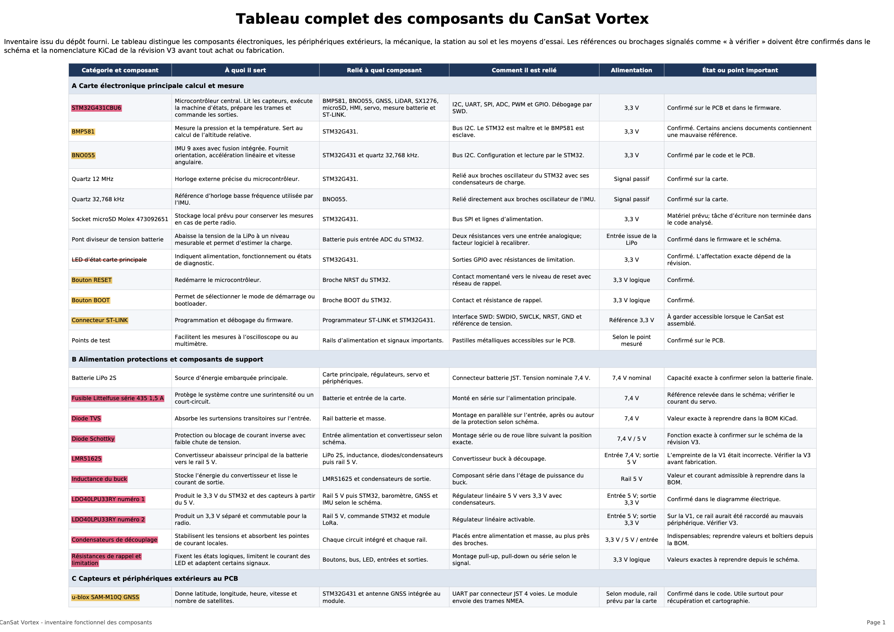
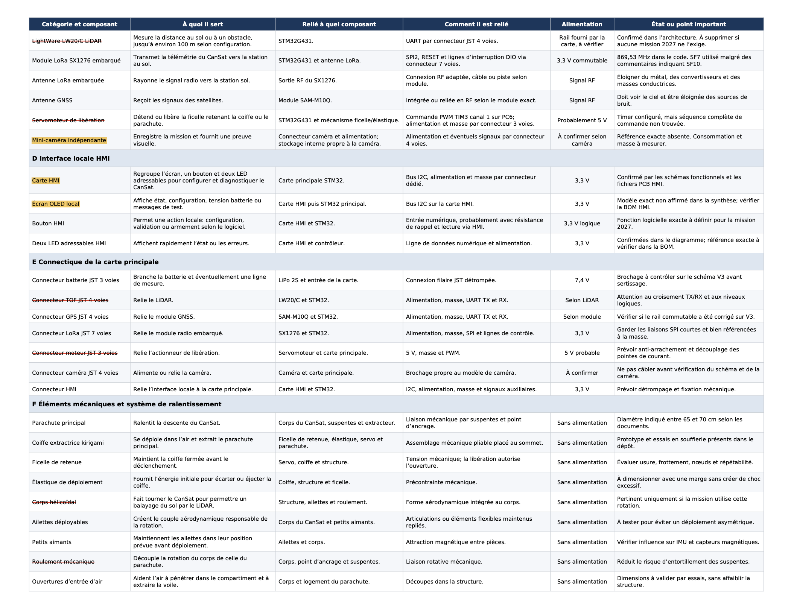
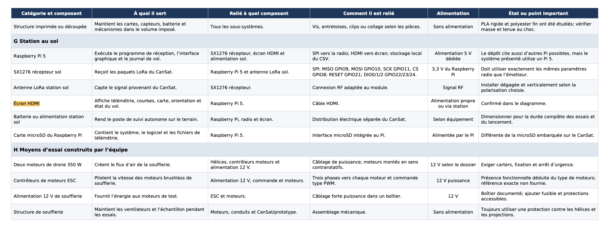

CanSat ENSEA 2025-2026 : un satellite de la taille d'une canette
Un satellite de 33 cl qui se largue d'un drone, déploie son parachute entre 75 et 90 m et cartographie le sol pendant la descente.
- Contexte
- Compétition CanSat C'space 2025-2026
- Contraintes
- 330 mL et 350 g maximum
- Électronique
- PCB principal 6 couches, PCB d'interface 2 couches, STM32G431
- Logiciel
- C sous FreeRTOS/STM32ideCube, station sol en Python (Raspberry Pi 5)
- Communication
- LoRa SX1276, 869,53 MHz, protocole de télémétrie maison avec CRC
Le projet
Un CanSat est un satellite de la taille d'une canette. Il est largué en altitude, déploie son parachute, puis mesure et transmet des données pendant la descente. Notre équipe a choisi la mission obligatoire sortir l'astronaute Alexeï au bout de 3s de chute, la miniaturisation, l'le biomimétisme ainsi que le timer analogique et la caméra embarquée est un plus que nous avons voulu embarquer .
Les missions visées
- Déploiement : une coiffe protectrice inspirée du kirigami libère le parachute principal entre 75 et 90 m.
- Miniaturisation : tout tient dans 330 mL et 350 g, grâce à un PCB à 6 couches et un parachute très léger.
- Sortie du spationaute : Se fera avec un système pneumatique qui se dépliera pour faire sotir et se repliera pour rentrer, à l'aide d'une pompe.
- Caméra embarquée : un film de l'atterrissage avec une mini-caméra indépendante.
- Biomimétisme : Pour cela la sortie du spationaute avec le système pneumatique ainsi que d'autres systèmes étudiés
Électronique
- Reverse engineering de la carte de l'équipe de l'an dernier, puis nouveau schéma adapté aux missions.
- Capteurs : baromètre BMP581, centrale inertielle BNO055, GNSS SAM-M10Q, lidar LW20/C, carte SD.
- Alimentation : batterie LiPo 7,4 V, convertisseur buck vers 5 V et régulateurs LDO 3,3 V, dont un commandable pour le module LoRa.
- PCB : La structure reste identique que celle de l'année dernière mais adaptée à nos missions, ce qui implique de refaire en partie le PCB
- Carte d'interface homme-machine : écran OLED et LEDs adressables pour suivre l'état du CanSat avant le lancement.
Logiciel embarqué
- FreeRTOS avec quatre tâches : machine à états, capteurs, LoRa et carte SD, reliées par des files de messages.
- Un paquet de télémétrie unifié à 10 Hz, envoyé en LoRa et enregistré sur la carte SD en CSV.
- Machine à états du vol : veille, configuration, prêt, ascension, chute, récupération. Elle s'appuie sur le lidar et le baromètre pour décider de l'état et couper les capteurs inutiles.
Station sol
- Application PyQt5 sur Raspberry Pi 5 qui reçoit la télémétrie LoRa.
- Rendu 3D de l'orientation du satellite, courbes en temps réel avec calcul de la vitesse verticale.
- Traitement après vol : FFT, filtre de Kalman, vision de la sortie de l'astronaute
Essais mécaniques (pas encore fait)
- Soufflerie construite par l'équipe avec deux moteurs brushless contrarotatifs, jusqu'à 60 km/h, pour tester les parachutes.
- Parachutes pilotes découpés au laser dans une veste coupe-vent, chaînés pour régler la force de traction.
- Parachute principal dimensionné par calcul à vitesse stabilisée : 2 à 5 m/s visés, diamètre retenu 45 cm.
- Premiers essais de largage avec un drone prêté par un professeur.
Ce que j'ai fait
Tout d'abord, j'ai du choisir les composants qu'on allait garder sur le cansat. Chaque année les règles changent, ainsi que les défis ce qui implique que les capteurs et les infrastructures changent d'une année à l'autre
j'ai donc choisi :
- Sélectionner les composants
- Faire un diagramme UML
- De modifier le PCB en fonction des changements
Sélection des composants
Pour la sélection des composants on a pris exemple sur les performances du dernier cansat (qui a terminé 1er de la dernière édition)
il nous fallait des capteurs pour :
- la vitesse
- la pression
- l'accélération
- le module GPS
Sélection des composants
En terme de microprocesseur il nous en fallait un qui était suffisamment puissant pour gérer les nombreux capteurs, la communication en lora ainsi que le GPS



En rouge nous avons les composants que nous allons utiliser mais que nous avons déjà et en jaune les composants que nous allons utiliser mais à commander
Diagramme UML
Il était plus facile de comprendre la structure de notre projet après avoir fait un digramme UML, il nous permet donc de voir les liaisons qu'il ya entre les composants, de voir comment on doit configurer notre PCB en focntion des éléments à intégrer

Conception PCB KiCad
Après avoir regarder les composants qu'on voulait intégrer, il a fallu modifier le PCB comme suit :